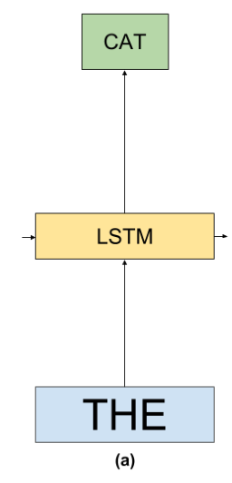
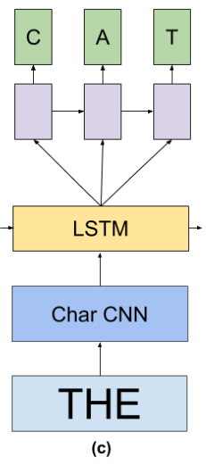

1. Language Modeling Improvements
Recurrent Neural Networks based LMs employ the chain rule to model joint probabilities over word sequences:
[success]
根据前i-1个w来预测wi是某个单词的条件概率。
假设每个wi的条件概率是独立的，因此可以使用链式法则。是由LSTM生成的。
where the context of all previous words is encoded with an LSTM, and the probability over words uses a Softmax (see Figure 1(a)).

1.1. Relationship between Noise Contrastive Estimation and Importance Sampling
As discussed in Section 2.3, a large scale Softmax is necessary for training good LMs because of the vocabulary size. A Hierarchical Softmax (Mnih & Hinton, 2009) employs a tree in which the probability distribution over words is decomposed into a product of two probabilities for each word, greatly reducing training and inference time as only the path specified by the hierarchy needs to be computed and updated.
[success]
inference：推断
这一段讲的是Hierarchical Softmax的原理。
Hierarchical Softmax对训练阶段和预测阶段都适用。
Choosing a good hierarchy is important for obtaining good results and we did not explore this approach further for this paper as sampling methods worked well for our setup.
[success]
本文没有尝试这种方法。
Sampling approaches are only useful during training, as they propose an approximation to the loss which is cheap to compute (also in a distributed setting) – however, at inference time one still has to compute the normalization term over all words.
[success]
Sampling approaches只能用于训练阶段，不能用于预测阶段。
这一段所描述的NCE中Sampling approaches的一种。
Noise Contrastive Estimation (NCE) proposes to consider a surrogate binary classification task in which a classifier is trained to discriminate between true data, or samples coming from some arbitrary distribution.
[success] surrogate：代理的
二分类问题：前i-1个w已知的情况下，wi是来自正样本分布的概率。
正样本：在训练数据中，前i-1个w特定的情况下，第i个单词为正样本。
负样本：随机选择的单词为负样本。
正样本是在训练数据中找到的，所以数量有限。
负样本是随机生成的，所以数量无限。
If both the noise and data distributions were known, the optimal classifier would be:
where Y is the binary random variable indicating whether w comes from the true data distribution, k is the number of negative samples per positive word, and p_d and p_n are the data and noise distribution respectively (we dropped any dependency on previous words for notational simplicity).
[success]
Y = true：w来自true data的分布
Y = false：w来自某个任意分布（noise分布）
：true data分布
：noise分布
It is easy to show that if we train a logistic classifier where σ is the logistic function, then, is a good approximation of ( is a logit which e.g. an LSTM LM computes).
[success]
logistic function
logit：逻辑回归
把logistic function代入以上公式得：结合前面的公式：
[?]看上去p'(w)就是p(w)，为什么说是的近似呢？
The other technique, which is based on importance sampling (IS), proposes to directly approximate the partition function (which comprises a sum over all words) with an estimate of it through importance sampling.
[warning]
partition function：[?] 配分函数
Though the methods look superficially similar, we will derive a similar surrogate classification task akin to NCE which arrives at IS, showing a strong connection between the two.
[info]
superficially：从表面上看
akin to：类似于
Suppose that, instead of having a binary task to decide if a word comes from the data or from the noise distribution, we want to identify the words coming from the true data distribution in a set W = {w 1 ,...,w k+1 }, comprised of k noise samples and one data distribution sample. Thus, we can train a multiclass loss over a multinomial random variable Y which maximizes logp(Y = 1|W), assuming w.l.o.g. that w 1 ∈ W is always the word coming from true data.
[info] w.l.o.g：without loss of generality，不失一般性地
By Bayes rule, and ignoring terms that are constant with respect to Y , we can write:
and, following a similar argument than for NCE, if we define p(Y = k|W) = softmax(s θ (w k )−logp n (w k )) then p 0 (w) = softmax(s θ (w,h)) is a good approximation of p d (word). Note that the only difference between NCE and IS is that, in NCE, we define a binary classification task between true or noise words with a logistic loss, whereas in IS we define a multiclass classification problem with a Softmax and cross entropy loss. We hope that our derivation helps clarify the similarities and differences between the two. In particular, we observe that IS, as it optimizes a multiclass classification task (in contrast to solving a binary task), may be a better choice. Indeed, the updates to the logits with IS are tied whereas in NCE they are independent.
[warning]
最后一句是什么意思？没看懂？
1.2. CNN Softmax
The character-level features allow for a smoother and compact parametrization of the word embeddings.
[warning]
为什么说“字符级表示的特征”更平滑和简洁呢？
Recent efforts on small scale language modeling have used CNN character embeddings for the input embeddings (Kim et al., 2015). Although not as straightforward, we propose an extension to this idea to also reduce the number of parameters of the Softmax layer.
[success]
由于CNN有使参数简洁的作用，本文把CNN结合到softmax层，目的是减少softmax层的参数数量。
Recall from Section 2.3 that the Softmax computes a logit as where h is a context vector and the word embedding. Instead of building a matrix of |V | × |h| (whose rows correspond to ), we produce e w with a CNN over the characters of w as – we call this a CNN Softmax.
[success] CNN Softmax的原理：
用CNN代替矩阵来生成word embedding 。
原来是LSTM层生成的，现在用CNN层产生，那LSTM层去哪了？
[?] 是什么？
We used the same network architecture to dynamically generate the Softmax word embeddings without sharing the parameters with the input word-embedding sub-network. For inference, the vectors can be precomputed, so there is no computational complexity increase w.r.t. the regular Softmax.
[success]
CNN Softmax的好处：没有额外的计算。
CNN层训练好之后，可以把所有对应的都提前算出来。因此在预测阶段不需要再实时计算了。
We note that, when using an importance sampling loss such as the one described in Section 3.1, only a few logits have non-zero gradient (those corresponding to the true and sampled words).
[success] IS loss的特点：只有一小部分具有非0梯度
With a Softmax where are independently learned word embeddings, this is not a problem.
[success] Softmax loss的特点：embedding是独立的。
But we observed that, when using a CNN, all the logits become tied as the function mapping from w to e w is quite smooth. As a result, a much smaller learning rate had to be used.
[success] CNN Softmax的优点：平滑
Even with this, the model lacks capacity to differentiate between words that have very different meanings but that are spelled similarly.
[success] CNN Softmax的缺点：不同含义单词的差异不够大
Thus, a reasonable compromise was to add a small correction factor which is learned per word,
[success]
解决方法：增加一个校正因子
such that:
where M is a matrix projecting a low-dimensional embedding vector corr w back up to the dimensionality of the projected LSTM hidden state of h. This amounts to adding a bottleneck linear layer, and brings the CNN Softmax much closer to our best result, as can be seen in Table 1, where adding a 128-dim correction halves the gap between regular and the CNN Softmax.
[warning]
halve：减半
上面好几段其实没看懂
Aside from a big reduction in the number of parameters and incorporating morphological knowledge from words, the other benefit of this approach is that out-of-vocabulary (OOV) words can easily be scored. This may be useful for other problems such as Machine Translation where handling out-of-vocabulary words is very important (Luong et al., 2014). This approach also allows parallel training over various data sets since the model is no longer explicitly parametrized by the vocabulary size – or the language.
[success] 字符级表示的优点：
（1）参数减少
（2）结合构词法知识
（3）处理单词表以外的单词
（4）平行处理
This has shown to help when using byte-level input embeddings for named entity recognition (Gillick et al., 2015), and we hope it will enable similar gains when used to map onto words.
1.3. Char LSTM Predictions
The CNN Softmax layer can handle arbitrary words and is much more efficient in terms of number of parameters than the full Softmax matrix. It is, though, still considerably slow, as to evaluate perplexities we need to compute the partition function.
[success]
perplexities：混乱，一种度量指标，在下一节有讲
要解决的问题：评价“perplexities”很费时
A class of models that solve this problem more efficiently are character-level LSTMs (Sutskever et al., 2011; Graves, 2013). They make predictions one character at a time, thus allowing to compute probabili ties over a much smaller vocabulary.
[success]
已有的解决方案：字符级LSTM
On the other hand, these models are more difficult to train and seem to perform worse even in small tasks like PTB (Graves, 2013). Most likely this is due to the sequences becoming much longer on average as the LSTM reads the input character by character instead of word by word.
[success]
字符级LSTM的问题：难以训练
Thus, we combine the word and character-level models by feeding a word-level LSTM hidden state h into a small LSTM that predicts the target word one character at a time (see Figure 1(c)).

In order to make the whole process reasonably efficient, we train the standard LSTM model until convergence, freeze its weights, and replace the standard word-level Softmax layer with the aforementioned character-level LSTM.
[info] aforementioned：前面提到的
The resulting model scales independently of vocabulary size – both for training and inference. However, it does seem to be worse than regular and CNN Softmax – we are hopeful that further research will enable these models to replace fixed vocabulary models whilst being computationally attractive.
[success]
优点：模型大小与|V|无关
缺点：性能变差